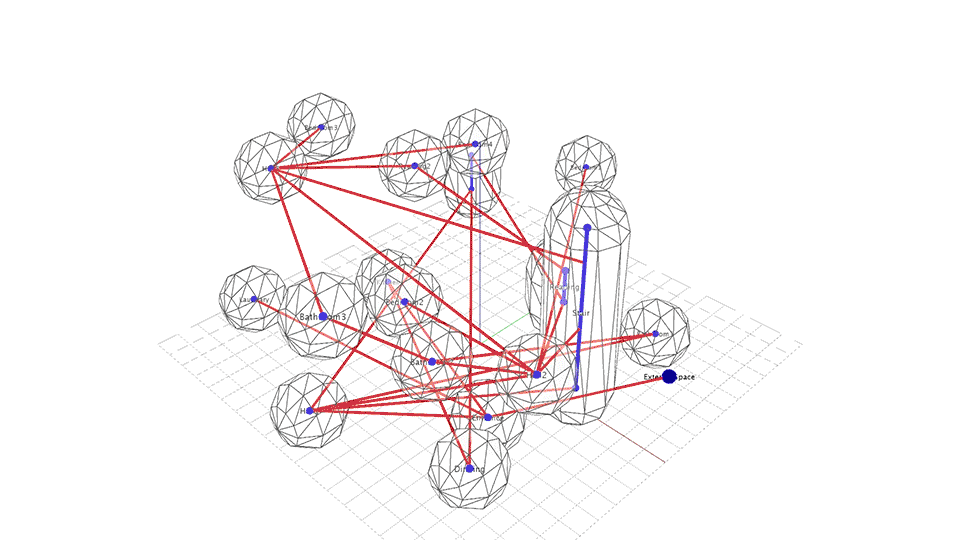
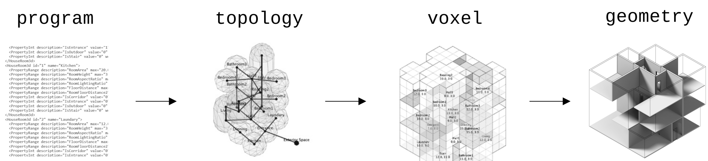
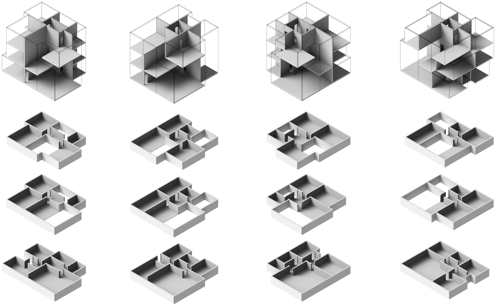
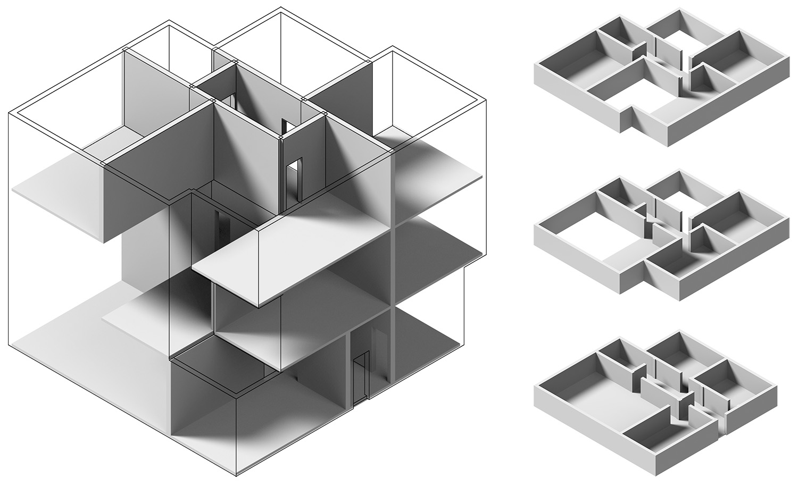

Bubble Diagrams

Bubble Diagrams explores an evolutionary approach of producing buildng layouts from the topological relations of building spaces specified by the designers in XML texts.
Bubble Diagrams considers the layout planning a similar process of multi-agent interactions where connected spaces reduce their distances by constantly pulling each other. The magnitute of the pulling foreces are propotional to the remaining distances as well as the user-defined weight values. The process starts in a random states and becomes stable after few iterations of running.
Bubble Diagrams constraines the topological model of spaces to a grid system such that the shape of the generated layout can be further optimized. The optimization adopts an evolutionary approach where random offsprings are produced and preserved / discarded based on the correspinding evaluation scores. The optimization process continues until all criteria are fulfilled or being stopped manually.
Framework

Outputs

generated results

generated results
-